User Guide
Thankyou for downloading gnaw.
Here is a guide so that you can easily get started and understand what the app can do, as well as some insight into what’s happening in the background.
This app requires a stable internet access to function.
Login page:
The first page you will see when you open the app, which you have likely already seen, is the login page.
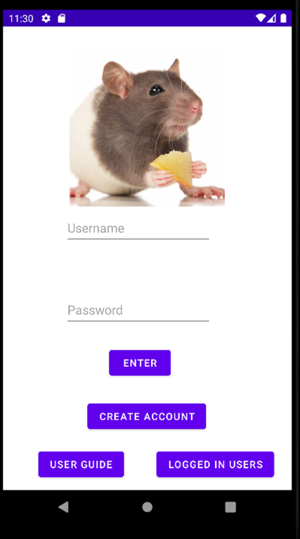On this page you will immediately see the option to enter a username and password. On clicking enter, the app will check the details you have entered against the online firestore database, and check whether they exist. If not, you will be told “invalid login”. This page also uses broadcast to check if you have an internet connection, and if you don't, will inform you via toast.
Create Account page:
By clicking “create account” on the login page, you will be taken to the create user page.
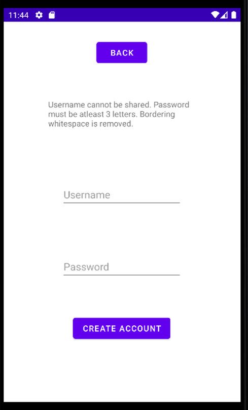
Here you may create a new account, stored on firestore, by entering a username and password. You may not share a username with anyone else, and your password must be at least 3 symbols long. Clicking create account will check that the details you entered are valid, and if so create a new account on the firestore database.
Logged in users page:
By clicking “logged in users”, you will be taken to the logged in users page.
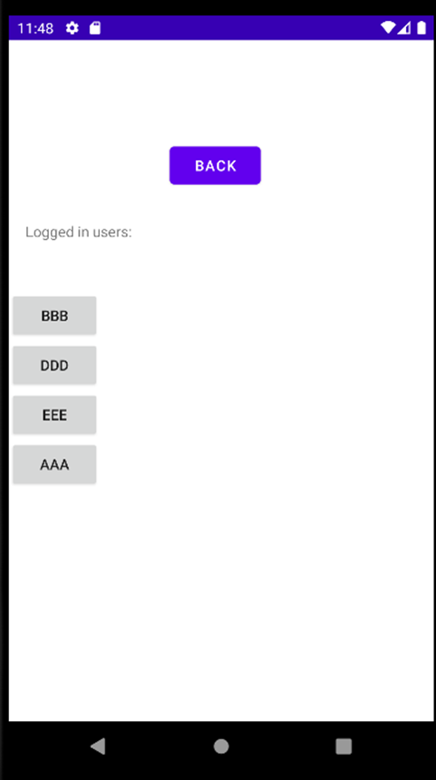This page will allow you to quickly log in as anyone who has previously logged to the app on your device, without entering details, by simply clicking on the account you want to enter. This uses a local database.
Home page:
Once you are logged in, you will be taken to the home page of the app.
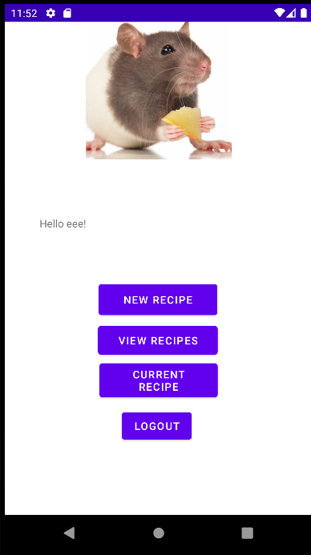Here you have the option to either create a new recipe, view recipes that have been submitted, view the most recent recipe you have looked at, or logout.
New recipe page:
By clicking the new recipe button, you will be taken to the new recipe page.
Firstly, you will have the option to add a recipe name and ingredients.
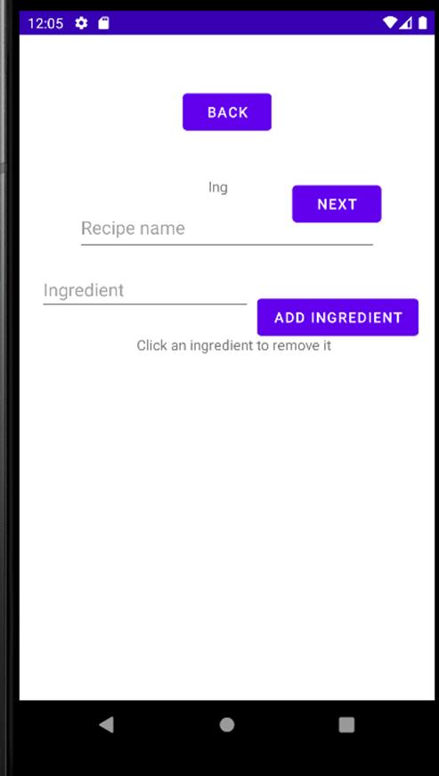You can add ingredients by entering them in the ingredient textbox, and clicking add ingredient:
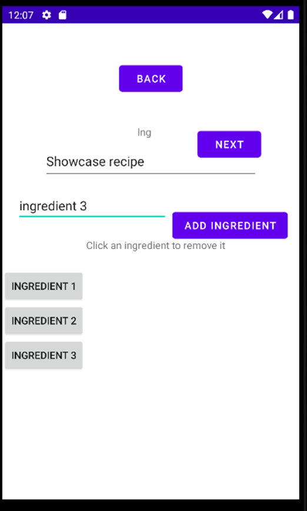You may remove an ingredient by clicking it.
Click next to begin adding instructions. Note that you can only move between recipe pages when you have entered valid info for the page you’re currently on.
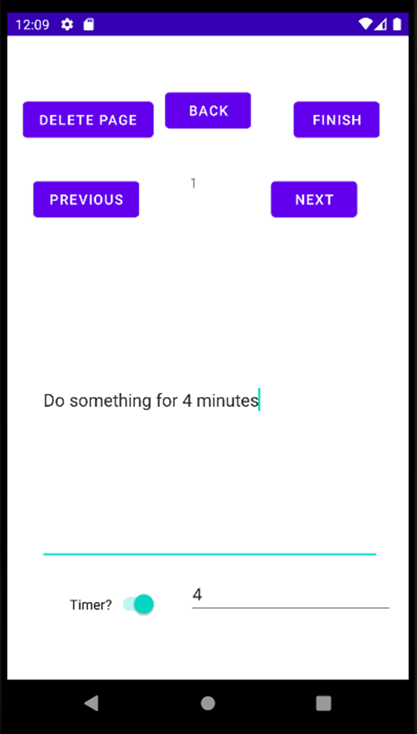You may enter instructions in the instruction text box, as well as optionally adding a timer and a time for it in minutes. You may delete the page you are currently on by clicking the delete page button. The instruction number you are currently editing is displayed between the next and previous buttons. You may use the next and previous buttons to traverse between the current instructions you have made, aswell as the ingredients page.
This information entered in this page will be restored on a screen rotation, thanks to it storing all of the current data in a view class whenever the activity is paused, and recreating it on creation if there exists data currently stored in the view class. Note that exiting the create recipe page will also clear the view class, meaning your recipe will be lost if you have not finished it.
When you have finished your recipe, you may click the finish button. This will check that the recipe instructions you have entered are valid, and if they are, add the recipe to the firestore database, as well as data about its ratings and creator. If you do not have an internet connection, you will be told and will have to try again.
View recipes page:
By clicking the view recipes button, you will be taken to the view recipes page.
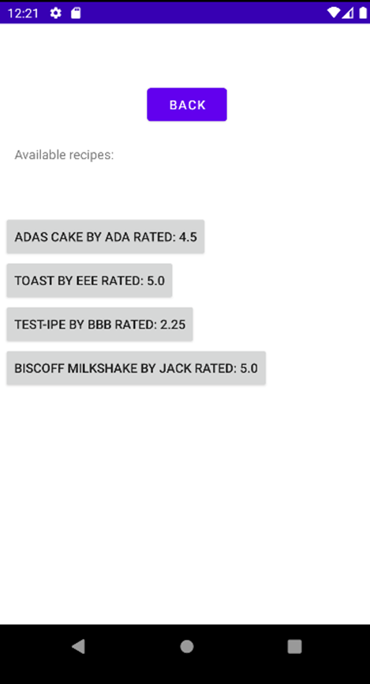
On this page, you are able to view all of the recipes that have currently been uploaded by users across all devices to the firestore database. They are all presented as a clickable button, with text informing you of the recipe name, creator name and overall rating. These ratings are automatically updated every few seconds. Clicking on a recipe will open it in the current recipe page, as well as setting it to the current recipe for your account. Recipes on this page are ordered by their overall rating.
Current recipe page:
By clicking on a recipe in the recipe browser, or clicking current recipe on your home page, you will be taken to the current recipe page. This page is used to display the instructions for the recipe you currently have selected to your account.
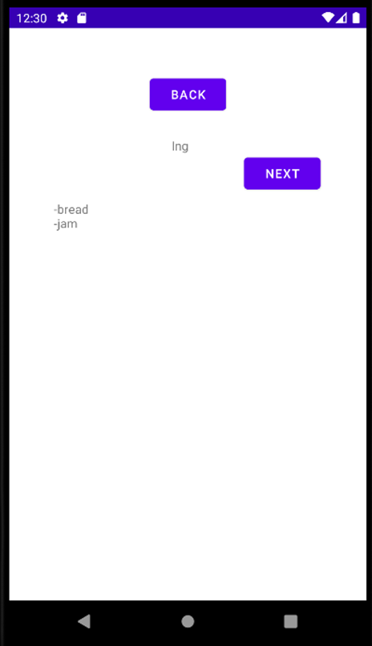Firstly you will see the ingredients page, which will list all of the ingredients needed for the current recipe. You can use the next (and currently unseen previous button) to navigate through the recipe. The app will remember which page you’re on by storing the index in shared preferences, allowing it to restore upon a screen rotation. If another recipe is selected, this index is not used.
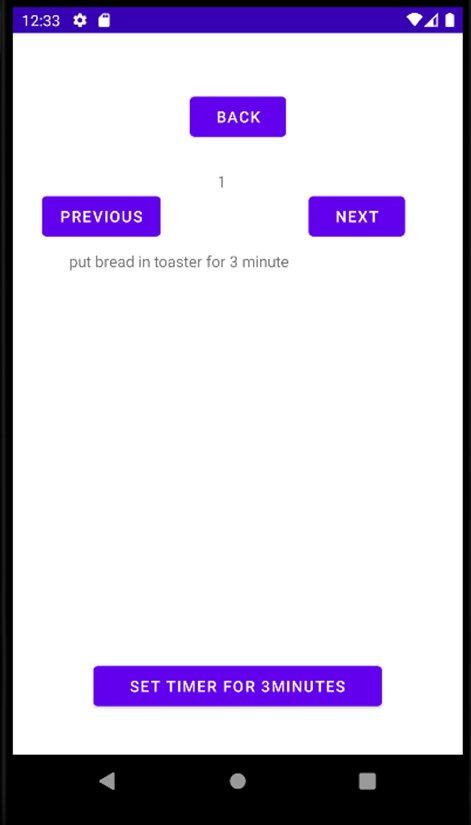An instruction page will look like the above, with the option to set a timer if the creator of the recipe added it for the current instruction. Clicking the button will send a notification to you after the specified time, which redirects back to this page.
Notice: For the purpose of testing and evaluation, a minute will is currently evaluated as 6 seconds. IE a 4 minute timer should go off after 24 seconds instead.
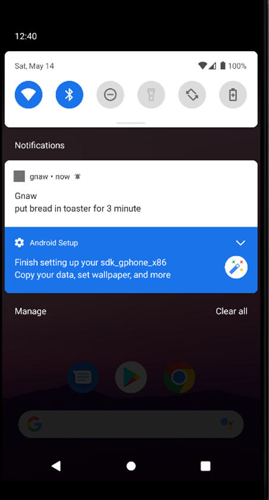On the final page of any recipe, you will see the rating page. This page gives you the option to rate the current recipe out of 5 stars, which will be uploaded to the firestore. This will effect the overall rating of the app, which is calculated from the mean value of all user ratings for the recipe.
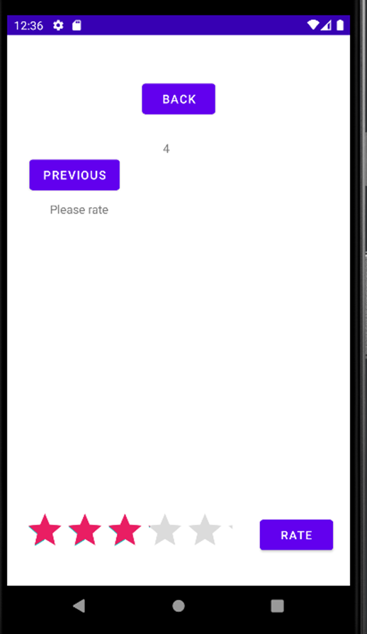